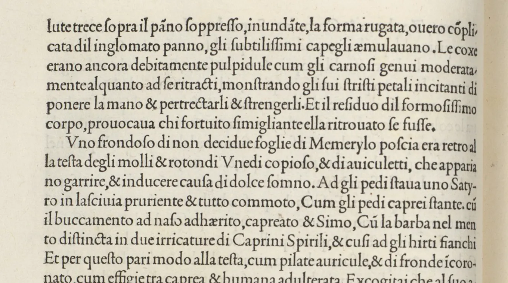
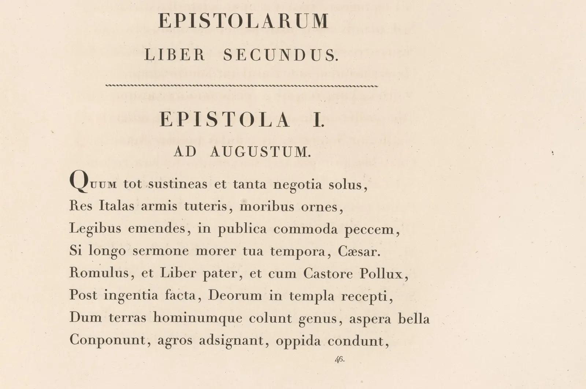

글꼴의 갈래
워드 프로그램의 글꼴 목록을 내려 보면 수백 개의 이름이 나온다. 그런데 그 이름들을 몇 걸음 떨어져 보면 몇 갈래로 모인다. 붓으로 쓴 듯 가로획이 가늘고 획 끝에 맺음이 있는 명조, 획 굵기가 고르고 끝이 뭉툭한 고딕, 펜으로 쓴 듯한 손글씨. 라틴 글자에는 세리프와 산세리프가 있다. 이 갈래는 누가 정답으로 정해 둔 것이 아니라, 오백 년 넘게 도구와 매체가 바뀔 때마다 새 꼴이 생기고 사람들이 그것에 이름을 붙여 온 결과다. 이 장은 그 갈래를 가르는 기준을 손으로 움직여 보고, 갈래의 경계가 생각보다 흐리다는 것도 확인한다. 그리고 마지막에는 "어떤 글꼴이 좋은가" 대신 "이 글은 무엇을 전하려는가"에서 시작하는 질문으로 글꼴을 고른다.
- 명조(바탕)와 고딕(돋움)을 가르는 두 특징, 곧 획의 대비와 부리(맺음)를 설명하고 모형으로 바꿔 본다.
- 라틴 활자의 주요 갈래(올드스타일, 트랜지셔널, 디돈, 슬랩 세리프, 산세리프)를 획 대비·강세 축·세리프로 구별한다.
- 1499년과 1799년의 실제 인쇄면을 비교하며 갈래가 도구와 시대에서 생겼다는 것을 본다.
- 글꼴 분류가 역사적 관습이며 경계가 흐리다는 것을 사례로 말한다.
- 크기와 매체, 글의 길이, 지원 글자 수, 굵기 수, 라이선스를 묻는 질문으로 글꼴을 고른다.
같은 문장, 네 가지 목소리
먼저 같은 문장을 네 글꼴로 짜 본다. 모두 SIL 오픈 폰트 라이선스(OFL)로 공개되어 누구나 쓰고 고칠 수 있는 글꼴이다.
여름 저녁, 골목 끝 책방에서 시를 읽습니다.
여름 저녁, 골목 끝 책방에서 시를 읽습니다.
여름 저녁, 골목 끝 책방에서 시를 읽습니다.
여름 저녁, 골목 끝 책방에서 시를 읽습니다.
뜻은 같은데 목소리가 다르다. 명조는 단정하고 차분한 책의 목소리, 고딕은 또렷하고 사무적인 안내의 목소리, 손글씨는 쪽지를 건네는 사람의 목소리처럼 들린다. 이런 인상은 사람과 문화에 따라 다르고 실험으로 일반화하기 어려우므로, 이 책은 "명조는 신뢰감을 준다" 같은 문장을 사실로 쓰지 않는다. 대신 눈으로 확인할 수 있는 차이부터 본다. 그 하나가 글줄이 지면 위에 만드는 회색의 짙기, 곧 회색값(Typographic color)이다. 글자를 멀리서 보거나 눈을 가늘게 뜨면 글자는 사라지고 회색 덩어리만 남는데, 그 회색이 글꼴마다 다르다.
아래 시뮬레이터는 네 글꼴로 같은 단락을 짜고, 흐림 슬라이더로 글자를 지워 회색만 남긴다. 아래 숫자는 단락 면적에서 잉크가 차지하는 비율이다.
눈을 가늘게 뜨면 남는 회색
회색값은 글꼴을 고를 때 생각보다 중요하다. 한 지면에 여러 글꼴을 섞으면 회색이 고르지 않아 얼룩져 보이고, 같은 글꼴이라도 굵기 이름(400, 700)이 같다고 실제 짙기가 같은 것은 아니다. 손글씨 글꼴은 글자 크기와 획 굵기가 제각각이라 회색이 들쭉날쭉하다. 짧은 문장에서는 그것이 생기가 되지만 긴 글에서는 눈이 쉴 곳이 없어진다. 이제 이 차이를 만드는 특징을 하나씩 떼어 본다.
명조와 고딕, 바탕과 돋움
한글 본문 글꼴의 두 큰 갈래는 명조(Myeongjo, Serif-style)와 고딕(Gothic, Sans-style)이다. 명조라는 이름은 중국 명나라 때 목판 인쇄에서 굳어진 한자 활자 꼴을 일본에서 부르던 말에서 왔고, 고딕은 19세기 서양에서 획 굵기가 고른 산세리프 활자를 부르던 말 가운데 하나에서 왔다. 두 이름 모두 한글 글꼴의 모양과는 직접 관계가 없는 빌려 온 이름이다. 그래서 1990년대에 명조를 바탕, 고딕을 돋움으로 바꿔 부르자는 움직임이 있었고, 운영체제의 기본 글꼴 이름(바탕, 돋움, 굴림, 궁서)에도 그 흔적이 남았다. 획 끝의 장식을 뜻하는 우리말로 부리를 써서 명조 계열을 부리 글꼴, 고딕 계열을 민부리 글꼴이라 부르기도 한다. 이 책은 가장 널리 쓰는 명조·고딕을 쓰고, 필요할 때 다른 이름을 함께 적는다.
한글 명조는 붓으로 쓴 글씨의 구조를 정리한 꼴이다. 붓을 대고, 긋고, 멈추는 동작이 획의 시작과 끝에 흔적을 남긴다. 가로획은 가늘고 끝에서 붓을 눌러 멈춘 자리가 작은 삼각형으로 솟고(맺음), 세로획은 굵고 시작하는 곳에 붓이 들어간 비스듬한 돌기가 있다. 고딕은 이런 흔적을 걷어 내고 획 굵기를 고르게 한 꼴이다. 아래 그림이 두 갈래의 차이를 보여 준다.
실제 글꼴로도 견줘 본다. 아래 그림의 경계선을 좌우로 끌면 같은 글이 명조(Noto Serif KR)와 고딕(Noto Sans KR)으로 바뀐다. 두 글꼴은 같은 프로젝트에서 짝으로 만들어져 글자의 뼈대와 비례가 많이 닮았다. 그래서 갈래의 차이만 비교하기 좋다.
두 특징을 따로 떼어 움직여 본다. 아래 모형은 같은 뼈대에 획 대비와 부리 크기를 각각 준다. 대비만 올리거나 부리만 키우면 어느 갈래라고 불러야 할지 애매한 글자가 나온다.
대비와 부리: 고딕에서 명조로
대비와 부리는 함께 다니는 경우가 많지만 반드시 그렇지는 않다. 부리는 작게 남기고 대비를 줄인 본문용 명조, 대비는 있지만 부리를 없앤 제목용 글꼴처럼 두 특징을 따로 조절한 글꼴이 계속 나온다. 이름표는 하나여도 실제 글꼴은 이 판 위의 어느 한 점에 있다.
라틴 활자의 갈래
라틴 글자의 갈래는 크게 세리프(Serif)와 산세리프(Sans-serif)로 나뉜다. 세리프는 획 끝에 붙은 작은 가로 장식이고, 산세리프는 "세리프가 없는"이라는 뜻이다(2장). 세리프 활자는 다시 시대에 따라 몇 갈래로 나뉜다. 가르는 기준은 세 가지다. 획 굵기의 차이(대비), 가장 가는 부분이 놓인 방향(강세 축(Stress, Axis)), 그리고 세리프의 모양이다.
- 올드스타일(Old-style, Garalde): 15~16세기 이탈리아와 프랑스의 활자. 펜으로 쓴 글씨의 흔적이 남아 대비가 크지 않고, o의 가는 부분이 11시와 5시 쪽으로 기운다(기운 강세 축). 세리프와 기둥 사이가 곡선(브래킷)으로 이어진다.
- 트랜지셔널(Transitional): 18세기 중반. 대비가 커지고 강세 축이 거의 수직으로 선다. 영국의 존 배스커빌(John Baskerville)이 1750년대에 만든 활자가 대표적이다.
- 디돈(Didone, Modern): 18세기 말~19세기 초. 프랑스의 디도 집안과 이탈리아의 잠바티스타 보도니(Giambattista Bodoni)의 활자. 굵은 기둥과 머리카락처럼 가는 획이 극단적으로 대비되고, 세리프는 브래킷 없이 가는 선이다.
- 슬랩 세리프(Slab serif, Egyptian): 1810년대 영국 광고 인쇄에서 등장. 대비가 작고 세리프가 기둥만큼 두툼한 판(slab)이다.
- 산세리프(Sans-serif): 1816년 윌리엄 캐즐런 4세(William Caslon IV)의 견본에 처음 나타났다고 알려진다. 19세기의 그로테스크, 1920년대의 지오메트릭(파울 레너의 푸투라, 1927)과 휴머니스트(에릭 길의 길 산스, 1928), 1950년대의 네오그로테스크(헬베티카, 유니버스, 1957)로 갈래가 이어진다.
여기에 손으로 쓴 글씨를 흉내 낸 스크립트(Script), 중세 필사본에서 온 블랙레터(Blackletter), 큰 크기에서 쓰도록 만든 디스플레이(Display) 글꼴이 더해진다. 이런 갈래를 체계로 묶은 대표적인 시도가 프랑스의 막시밀리앵 복스(Maximilien Vox)가 1954년에 제안하고 국제 타이포그래피 협회(ATypI)가 1962년에 받아들인 복스-ATypI 분류다.
실제 인쇄면으로 두 시대를 견줘 본다. 아래 두 그림은 정확히 300년 차이가 나는 베네치아와 파리의 책이다.


두 인쇄면의 차이는 취향의 변화만이 아니다. 1499년의 활자는 펜글씨를 본뜬 손의 기억을 갖고 있고, 1799년의 활자는 동판 조각처럼 아주 가는 선을 새기고 찍어 낼 수 있게 된 기술, 더 매끄러운 종이와 더 정밀한 인쇄기 위에서 나왔다. 아래 모형에서 세 기준을 직접 움직여 갈래를 찾아본다. 판 위의 점은 대비(가로)와 강세 축의 기울기(세로)다.
대비, 축, 세리프로 라틴 갈래 찾기
판 위에서 보듯 갈래는 섬이 아니라 지도 위의 지역이다. 지역의 가운데는 분명하지만 경계는 흐리다. 분류 이름은 그 지역의 가운데에 붙은 이름표일 뿐, 모든 글꼴이 정확히 한 칸에 들어간다는 뜻이 아니다.
갈래는 쌓인다: 분류의 역사
갈래가 생긴 순서를 따라가면 하나의 원리가 보인다. 새 갈래는 앞의 갈래를 지우지 않고 그 위에 쌓인다. 디돈이 나왔다고 올드스타일이 사라지지 않았고, 산세리프가 퍼졌다고 세리프가 사라지지 않았다. 오늘의 글꼴 목록은 오백 년 동안 쌓인 지층이다. 아래 연표의 손잡이를 끌어 시대를 옮겨 본다.
갈래의 연표
한글 글꼴의 갈래도 같은 방식으로 쌓였다. 붓글씨와 목판의 꼴 위에 20세기 금속 활자의 명조와 고딕이 놓였고, 사진식자와 컴퓨터 시대에 굵기와 너비가 다양한 가족이 늘어났으며, 탈네모틀(3장)과 손글씨, 제목용 디스플레이 글꼴이 더해졌다. 그리고 화면에서 읽는 일이 늘면서, 낮은 해상도에서도 또렷한 본문용 고딕이 크게 늘었다.
크기와 매체: 가는 획은 살아남는가
갈래를 고를 때 가장 현실적인 기준 하나는 그 글자가 놓일 크기와 매체다. 명조의 가는 가로획은 인쇄에서는 아주 가늘어도 또렷하게 찍히지만, 화면에서는 화소보다 가늘어질 수 있다. 화소보다 가는 선은 화면에서 옅은 회색 줄로 번져 보인다. 글자가 흐리게 보이는 이유다(화면 렌더링은 11장).
아래 시뮬레이터는 같은 문장을 고른 크기와 해상도로 그린 뒤, 그 아래에 화소를 확대해 보여 준다. 위쪽 숫자는 그 크기에서 글꼴의 가로획과 세로획이 화면의 화소 몇 개 굵기인지 잰 값이다.
화소 위의 가로획
이것이 "화면 본문에는 고딕, 인쇄 본문에는 명조"라는 오랜 관행의 기술적인 근거 가운데 하나다. 다만 이 관행은 규칙이 아니다. 고해상도 화면이 흔해지면서 화면에서도 명조로 긴 글을 읽는 일이 늘었고, 반대로 인쇄물에도 고딕 본문이 많다. 명조와 고딕 가운데 어느 쪽이 "더 잘 읽히는가"를 다룬 연구는 결과가 엇갈리며, 이 책은 7장에서 그 근거를 따로 본다. 여기서 확인한 것은 더 좁은 사실이다. 같은 크기에서 명조의 가는 획은 고딕보다 화소 수가 적고, 그래서 해상도가 낮을수록 먼저 흐려진다.
손글씨와 디스플레이
명조와 고딕이 본문을 맡는다면, 나머지 갈래는 주로 짧은 글을 맡는다. 손글씨 글꼴(Handwriting font)은 펜이나 붓으로 쓴 글씨를 글꼴로 만든 것이다. 글자마다 크기와 기울기가 조금씩 달라 사람이 직접 쓴 듯한 온기가 있지만, 그만큼 회색값이 고르지 않아 긴 글에서는 쉽게 피로해진다. 디스플레이 글꼴(Display typeface)은 제목과 포스터처럼 큰 크기에서 쓰도록 만든 글꼴이다. 아주 굵거나 아주 가늘거나, 대비가 극단적이거나 장식이 많아 작은 크기에서는 무너지지만 큰 크기에서는 본문 글꼴이 낼 수 없는 인상을 만든다. 같은 이유로 본문 글꼴을 제목 크기로 키우면 자간과 획이 헐거워 보이기 쉽다(12장).
분류의 한계
지금까지 본 갈래는 모두 쓸모 있는 이름표다. 하지만 이름표에는 한계가 있다.
첫째, 분류는 역사적 관습이다. 올드스타일, 트랜지셔널, 모던 같은 이름은 그 꼴이 생긴 뒤에 붙었고, 특히 "모던"은 18세기 말의 활자를 가리키는데 지금 보면 전혀 현대적이지 않다. "트랜지셔널"(과도기)이라는 이름도 올드스타일에서 모던으로 가는 중간이라는, 결과를 알고 붙인 해석이다. 둘째, 기준이 섞여 있다. 어떤 갈래는 시대로, 어떤 갈래는 모양으로, 어떤 갈래는 쓰임(본문·디스플레이)으로 나뉘어 한 글꼴이 여러 칸에 동시에 들어간다. 셋째, 새 글꼴은 일부러 경계에 선다. 세리프와 산세리프의 특징을 섞은 글꼴, 명조의 대비와 고딕의 끝맺음을 섞은 한글 글꼴처럼 칸 사이를 노리는 디자인이 계속 나온다. 그래서 분류표는 판단을 대신하지 못한다. 분류는 처음 보는 글꼴을 설명할 말을 주고, 비슷한 후보를 찾는 출발점이 된다. 그것이 분류가 해 줄 수 있는 일의 전부이자 가장 큰 쓸모다.
글꼴을 고르는 질문
좋은 글꼴은 따로 없다. 이 글에 맞는 글꼴이 있을 뿐이다. 후보를 고를 때 아래 질문을 차례로 던진다.
- 무엇을 전하려는가. 정보를 빨리 찾게 할 안내인가, 천천히 따라 읽을 이야기인가, 한눈에 인상을 남길 제목인가.
- 어디서, 어떤 크기로 읽히는가. 휴대폰 화면의 작은 본문인가, 종이 위의 책 본문인가, 멀리서 보는 간판인가. 가는 획이 살아남는가.
- 얼마나 긴가. 한 줄이면 개성이 강한 글꼴도 좋지만, 열 쪽이면 회색값이 고르고 눈에 익은 글꼴이 편하다.
- 필요한 글자가 다 있는가. 한글 11,172자, 라틴 글자와 숫자, 문장 부호, 필요하면 한자. 사람 이름 하나가 대체 글꼴로 튀어나오면 지면이 깨진다.
- 굵기와 너비가 충분한가. 제목·소제목·본문·주석을 한 가족 안에서 나누려면 굵기가 여럿 있어야 한다(8장).
- 쓸 수 있는가. 라이선스가 인쇄, 웹, 간판 같은 용도를 허락하는가. 이 책의 예시 글꼴은 모두 OFL로, 상업적 용도를 포함해 자유롭게 쓸 수 있고 글꼴 파일 자체만 따로 팔 수는 없다.
아래 실험실에서 쓰임과 글꼴을 바꿔 가며 이 질문에 답해 본다. 쓰임을 고르면 그 자리의 모습(휴대폰 화면, A5 책자 한 쪽, 안내문 제목, 손글씨 쪽지)에 글자가 놓인다.
글꼴 고르기 실험실
실험실에서 본 것처럼 같은 글꼴이 자리에 따라 강점이 되기도, 약점이 되기도 한다. 그래서 글꼴은 "좋은 글꼴 목록"에서가 아니라 자리마다 고른다. 후보를 두세 개로 좁혔다면, 실제 원고의 한 단락을 실제 크기와 매체로 짜서 비교하는 것이 가장 확실하다. 화면이라면 실제 휴대폰에 띄우고, 인쇄라면 실제 종이에 출력한다.
서윤의 작업 노트
화면에는 고딕, 종이에는 명조
간판 한글의 틀을 정한 다음 날, 서윤은 웹사이트의 서점 소식 글과 안내 책자 「골목 산책」의 본문 글꼴을 고르기 시작했다. 처음 생각은 간단했다. "둘 다 같은 글꼴로 하면 통일감이 있겠지." 그런데 봄에 그린 수채 드로잉 옆에 고딕 본문을 놓아 보니 책자가 안내 표지판처럼 딱딱해 보였고, 명조 본문을 휴대폰에 띄워 보니 가로획이 가늘어 회색 안개처럼 흐렸다. 주인의 말이 떠올랐다. "할머니 손님도 휴대폰으로 소식을 읽으신다."
서윤은 이 장의 질문을 두 자리에 각각 던졌다. 웹 본문은 휴대폰 화면에서, 짧게는 몇 줄 길게는 한 화면 넘게 읽히는 안내 글이다. 책자 본문은 A5 종이 위에서 드로잉과 함께 천천히 읽히는 산책 이야기다. 후보는 모두 OFL 글꼴로 좁혔다. 고딕은 Noto Sans KR, 명조는 Noto Serif KR과 Gowun Batang. 화소 시뮬레이터로 재 보니 같은 16px에서 Noto Serif KR의 가로획은 보통 화면(1×)에서 0.71화소, Noto Sans KR은 1.12화소였다. 같은 명조 가로획도 600dpi 인쇄에서는 점 약 4.5개 굵기로 찍혔다.
한도경은 두 출력물을 나란히 놓고 오래 보더니 말했다. "활판 시절에도 책은 명조, 전단지 제목은 고딕이었지. 그게 법이라서가 아니라 종이와 잉크가 그렇게 시켰어. 지금은 화면이 시키는 거고." 서윤의 선택은 화면 본문은 고딕 계열의 Noto Sans KR, 책자 본문은 명조 계열의 Noto Serif KR이었다. 이유는 셋이다. 첫째, 화면 본문은 휴대폰의 작은 크기와 다양한 해상도에서 가는 획이 흐려질 위험이 적은 고딕이 안전하다. 둘째, 책자 본문은 인쇄 해상도에서 가는 획이 살아 있고, 붓의 흔적이 남은 명조가 수채 드로잉의 손맛과 잘 어울린다. 셋째, 두 글꼴은 짝으로 만들어져 뼈대와 라틴 글자의 비례가 맞으므로, 웹과 책자가 서로 다른 글꼴을 쓰면서도 한 가게의 목소리로 이어진다. Gowun Batang은 따뜻한 인상이 마음에 들었지만 굵기가 두 가지뿐이어서, 위계를 짤 여지가 더 넓은 Noto Serif KR을 본문으로 두고 보류했다. 손글씨 글꼴은 본문 후보에서 뺐다.
#22342a
책방 초록#2f7d5b
크림#ffe2d7
핵심 정리
- 한글 본문 글꼴의 두 큰 갈래는 명조(바탕, 부리 글꼴)와 고딕(돋움, 민부리 글꼴)이다. 둘을 가르는 특징은 획의 대비와 부리(붓의 흔적인 돌기와 맺음)다.
- 라틴 세리프 활자는 대비, 강세 축, 세리프 모양으로 올드스타일, 트랜지셔널, 디돈, 슬랩 세리프로 나뉘고, 1816년 무렵 등장한 산세리프는 그로테스크, 지오메트릭, 휴머니스트, 네오그로테스크로 갈래를 이었다.
- 갈래는 도구와 매체의 변화에서 생겼고, 새 갈래는 앞 갈래를 지우지 않고 쌓인다. 1499년과 1799년의 인쇄면은 펜의 기억과 정밀한 조각·인쇄 기술의 차이를 보여 준다.
- 분류는 역사적 관습이며 기준(시대, 모양, 쓰임)이 섞여 있고 경계가 흐리다. 분류는 설명의 말과 후보를 찾는 출발점을 줄 뿐 판단을 대신하지 않는다.
- 같은 크기에서 명조의 가는 가로획은 고딕보다 화소 수가 적어, 해상도가 낮은 화면에서 먼저 흐려진다. 인쇄 해상도에서는 그 차이가 거의 문제 되지 않는다.
- 글꼴은 무엇을 전하려는가, 어디서 어떤 크기로, 얼마나 길게, 필요한 글자와 굵기가 있는가, 라이선스가 허락하는가를 묻고 자리마다 고른다.
확인 퀴즈
1. 한글 명조와 고딕을 가르는 특징으로 가장 알맞은 것은?
2. 굵은 기둥과 머리카락처럼 가는 가로획이 극단적으로 대비되고, o의 가장 가는 부분이 정확히 위아래에 놓이며, 세리프가 브래킷 없는 가는 선인 라틴 활자의 갈래는?
3. 같은 16px 문장을 보통 해상도(1×) 화면에 띄웠더니 명조는 흐릿하고 고딕은 또렷했다. 가장 알맞은 설명은?
4. 글꼴 분류에 대한 설명으로 옳은 것은?
출처와 글꼴
- 그림 3: 「힙네로토마키아 폴리필리」(베네치아, 알두스 마누티우스, 1499), 메트로폴리탄 미술관 365313. 그림 4: 호라티우스 「작품집」(파리, 피에르 디도, 1799), 메트로폴리탄 미술관 351789. 모두 The Met Open Access(CC0).
- 라틴 활자의 갈래와 연대(젠슨 1470, 알두스·그리포 1490년대, 가라몽 16세기, 배스커빌 1750년대, 디도·보도니 18세기 말, 슬랩 세리프 1810년대, 캐즐런 4세의 산세리프 1816, 푸투라 1927, 길 산스 1928, 헬베티카·유니버스 1957)와 복스-ATypI 분류(1954년 제안, 1962년 채택)는 활자사의 일반적인 서술을 요약했다. 연도는 대표 활자 기준의 어림이다.
- 명조·고딕, 바탕·돋움, 부리·민부리, 궁체·판본체의 명칭과 유래는 한국 타이포그래피의 일반적인 설명을 요약했다.
- 명조·고딕 모형, 라틴 갈래 모형과 갈래 판정 거리, 회색값과 획 굵기 측정 방법은 이 책이 만든 교육용 모형이다.
- 글꼴(모두 SIL Open Font License 1.1, Google Fonts에서 불러옴): Noto Serif KR, Noto Sans KR(Google·Adobe의 Source Han Serif/Sans 계열, 200~900·100~900), Gowun Batang(류양희, 2021, 400·700), Nanum Pen Script(NHN, 산돌커뮤니케이션 디자인, 2010, 400). 네 글꼴 모두 한글 음절 11,172자를 담고 있음을 글꼴 파일에서 확인했다(2026년 10월).